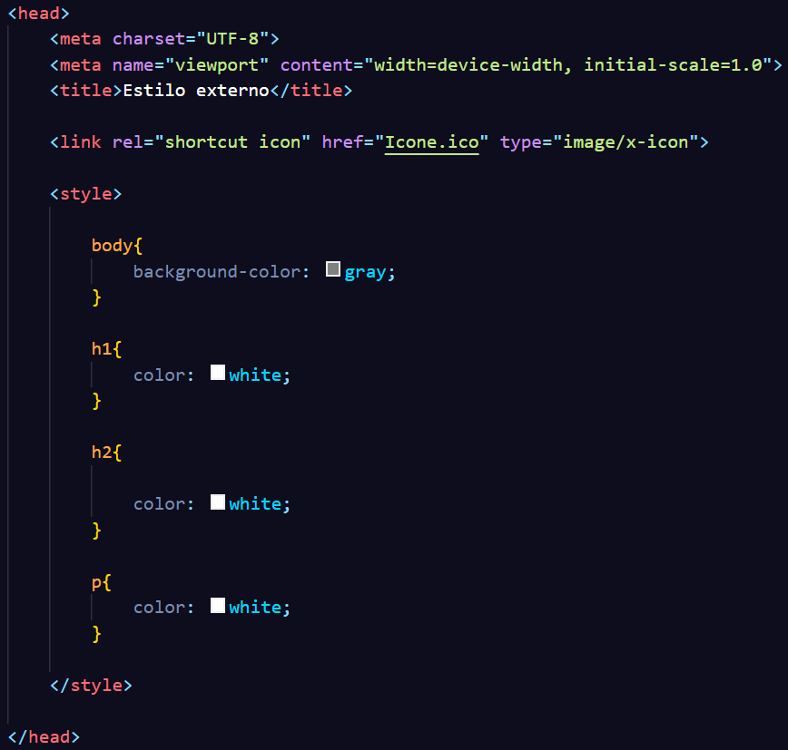

Podemos custumizar nossas tags usando style dentro do <head> do nosso código, clique a baixo para ver alguns exemplos:

Os esilos Internos são melhores que os Inline, por conta de sua organização e praticidade. Porém, ainda existem alguns problemas dentro do extilo interno, por exemplo a falta de praticidade para manter várias páginas com a mesma personalização, nesse caso teriam que ser colado em cada página o código do style.